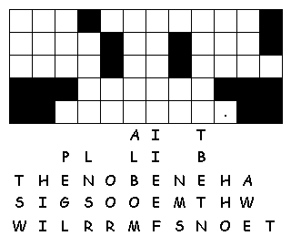

This week's lessons: Genesis 9:8-17, Psalm 25:1-10 , 1 Peter 3:18-22 , Mark 1:9-15
This
week's lessons: Genesis
9:8-17, Psalm
25:1-10 , 1
Peter 3:18-22 , Mark
1:9-15
Elementary School Pew-work
B
O W I B S C G
|
Word List |
|
|
(Genesis 9:13) I have set my bow in the clouds, and it shall
be a sign of the covenant between me and the earth. |
||

|
||
Again, God said to Noah and his sons: I am going to make a solemn promise to you and to everyone who will live after you. This includes the birds and the animals that came out of the boat. I promise every living creature that the earth and those living on it will never again be destroyed by a flood. The rainbow that I have put in the sky will be my sign to you and to every living creature on earth.
1. To whom did God make his promise?
__________________________________________________________________________
2. What did God promise?
__________________________________________________________________________
3. What is the sign of God's promise?
__________________________________________________________________________
Questions taken from Sunday School Lessons; http://www.sundayschoollessons.com
Next week; Genesis 17:1-7, 15-16, Psalm 22:23-31, Romans 4:13-25, Mark 8:31-38 or Mark 9:2-9